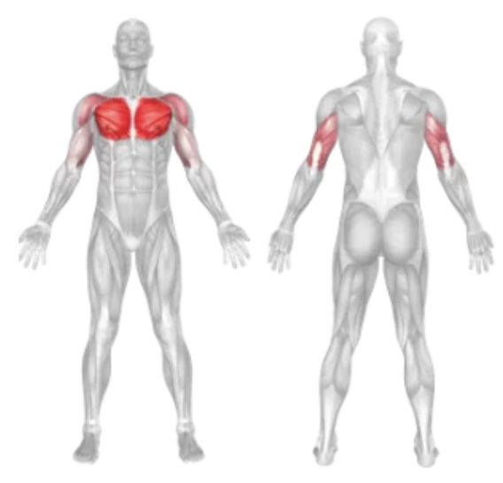
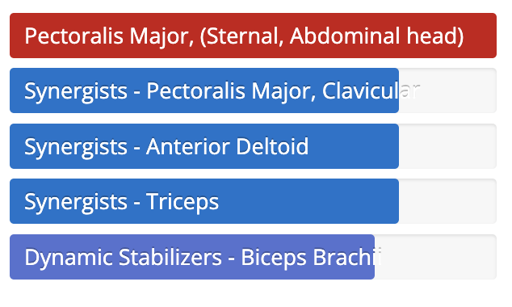

Setup
- Set a decline bench at about a 15–30 degree angle.
- Lie back with a dumbbell in each hand, resting on your thighs.
- Kick the weights up as you lie back, positioning them near your lower chest with palms facing forward.
- Keep your feet secured under the bench’s foot pads and maintain a strong core.
Execution
- Press: Push the dumbbells up in a controlled manner until your arms are fully extended.
- Lower: Slowly bring the weights back down to the starting position, keeping your elbows at about a 45-degree angle.
- Repeat for the desired number of reps.
Tips for Effectiveness
- Control the Descent: Avoid letting the dumbbells drop quickly—slow and controlled movement increases effectiveness.
- Wrist Alignment: Keep your wrists neutral to prevent strain.
- Stabilize Core: Engaging your core helps maintain control and reduces injury risk.
Benefits of Decline Dumbbell Press
- Lower Chest Focus: Targets the lower pectorals more effectively than flat bench.
- Balanced Development: Using dumbbells helps address muscle imbalances.
- Improved Range of Motion: Allows for a deeper stretch and better contraction.
Muscles Worked in Decline Dumbbell Press

